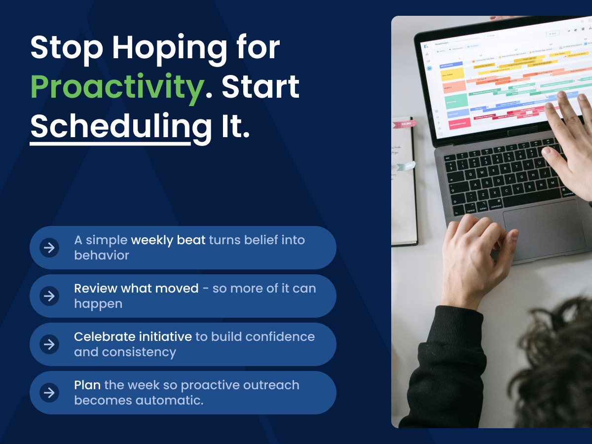
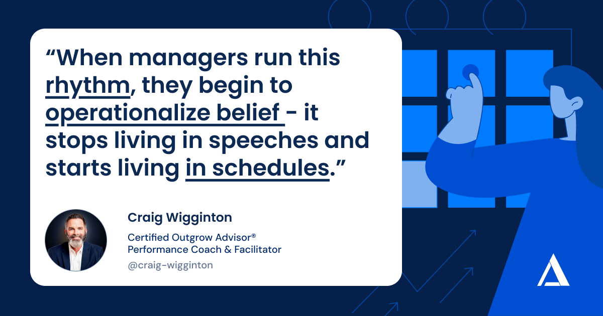
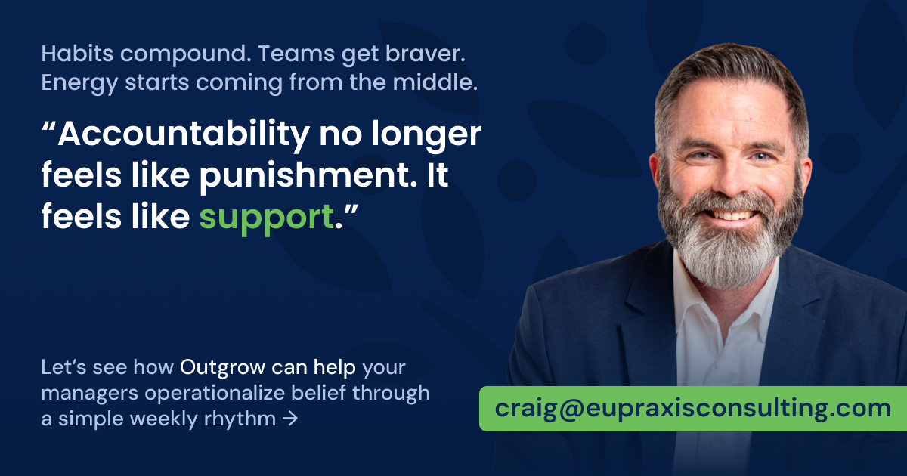
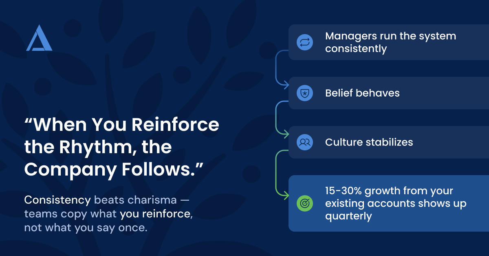

From CEO to Chief Belief Officer: How a Leader’s Belief Powers the System
When CEOs step back, belief fades. Learn how shifting from CEO to Chief Belief Officer keeps culture, managers, and growth systems energized.
ReadRun Outgrow · CEO series, part 2

This article is part two of our CEO Series where we explore how managers turn proactive belief into a simple weekly rhythm that drives consistent, measurable growth.
Belief got you here.
You believe in your product, your market, and your people. Your teams believe in serving customers well. No one doubts the mission.
But this positive belief is not usually what decides priorities at 10AM on Tuesday — and that’s where companies need to operationalize belief.
At that moment, your salesperson is staring at a full inbox. Your service team is buried in tickets. Operations is chasing deadlines. Everyone is working hard, yet almost no one is reaching out to customers when nothing is wrong.
That is where many mid market companies stall. The organization believes in being proactive, but the behavior is reactive. Energy that should be spent helping customers more is redirected into managing problems faster.
It does not collapse in a day. Rhythm disappears first. One missed call. One postponed meeting. One huddle that gets cancelled.
Managers want to lead proactively, but without a simple rhythm, they get pulled into the same urgent loop as their teams. They spend their days responding instead of reinforcing. Even your best people end up managing tasks instead of momentum.
Belief is still there. It is just not running the week.
In every successful Outgrow company, growth follows a beat.
Not a complicated program. A short, repeatable manager rhythm that connects belief to behavior every single week. It’s how you can easily operationalize belief.
The core is a 15 to 20 minute Outgrow huddle. Same structure, same time, every week for every customer facing team. It follows a simple three part flow:
What proactive actions did we do last week? What does the data show? What did we learn in the process?
Who took initiative? Who persevered? What opportunities were identified, progressed or closed?

Who will we reach out to this week? What target proactive actions will we implement? Is everyone clear?
That is it. A few minutes that anchor the entire week.
When managers run this rhythm, they begin to operationalize belief — it stops living in speeches and starts living in schedules. Culture no longer depends on charisma or inspiration. It depends on a calendar event that does not move.
Every huddle becomes a small act of renewal. You restate the belief, connect it to real actions, and reaffirm it through recognition. Over time, departments begin to move in sync. Communication flows. Optimism spreads.
Most companies obsess over the numbers that are hardest to change. Revenue. Margin. Closing ratios.
Those metrics matter, but they are lagging. By the time they are on the report, they are already history. When managers only see lagging numbers, accountability feels like getting graded on an exam you took a month ago.
Outgrow flips that. It pulls the spotlight to leading indicators, the behaviors that cause growth:
These actions are small and simple. They are also powerful.
Outgrow gives each manager a straightforward way to track them. Often it is nothing more complex than a shared tracker that answers three questions:
Now data does something different. It stops feeling like surveillance and starts feeling like progress. People are not being audited. They are being seen.
Managers gain live visibility into momentum. They can coach early, encourage effort, and adjust focus before performance dips. That is how visibility turns into velocity.

In most organizations, accountability sounds like pressure. A tense meeting. A spreadsheet review. A reminder of what did not get done.
When accountability shows up that way, people retreat. They make safer calls or fewer calls. They manage risk instead of creating opportunity. Confidence drains out of the culture.
Outgrow managers are taught to coach a different way.
They shift the conversation from compliance to confidence:
The tone changes. Meetings feel lighter. People lean in instead of bracing.
Over time, managers develop simple habits that build confidence:
Those habits compound. Teams feel stronger and braver. They stop waiting for leadership to inject energy and start carrying it themselves.
Accountability no longer feels like punishment. It feels like support. And that emotional shift shows up in sales calls, service interactions, and internal collaboration.
Here is the punch line.
Outgrow runs through managers, but it lives because of you.
You cannot personally lead every huddle or track every behavior. You also cannot delegate the importance of this rhythm. When you talk about proactive communication, your managers talk about it. When you celebrate a proactive win, other teams copy it. When you go quiet, the organization quietly assumes it is safe to stop.
Your job is to equip and protect the rhythm:
You do not need a new strategy. You need a system to operationalize belief — turning what you already have into a weekly behavior, led by the people who touch your customers every day.

When managers run that system with consistency, belief behaves. When belief behaves, culture stabilizes. When culture stabilizes, that extra 15 to 30 percent of organic growth that used to come and go starts to show up quarter after quarter.That is how managers operationalize Outgrow. They take what you believe, give it a beat, measure what matters, and turn accountability into confidence. Your role is to put that rhythm in their hands and keep your belief behind it.
Keep reading
When CEOs step back, belief fades. Learn how shifting from CEO to Chief Belief Officer keeps culture, managers, and growth systems energized.
ReadWhy accountability fails when it shows up too late — and how manager accountability, rhythm, and weekly conversation create predictable performance.
ReadStruggling with a revenue plateau? Discover how manager-led weekly rhythms rebuild momentum and spark organic growth.
Read